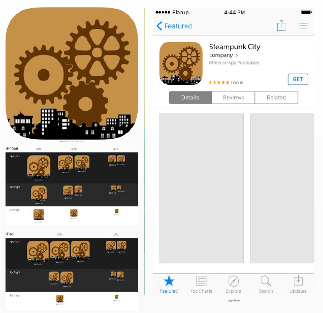

Steampunk City:
This design was for a game called Steampunk City. One of the main deliverables was a website as a base for players to learn about updates to the content, and new players could find the link to install it.
Next was related to their phone version of the game. They needed an app icon designed to go with the game that would be recognizable and match the themes of the main gameplay.
The final part was putting it all together, making sure the app icon was scalable and easy to recognize when put on a phone home page. As well as taking the website and adjusting it to properly fit on smaller screens when necessary.